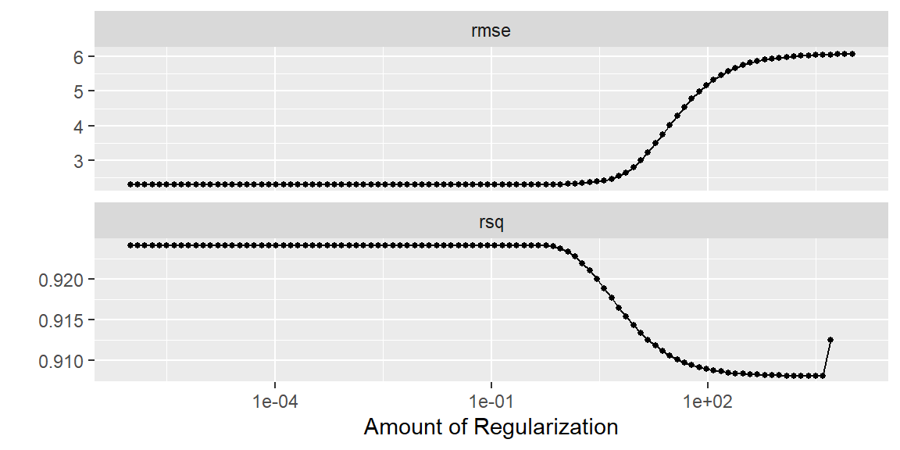
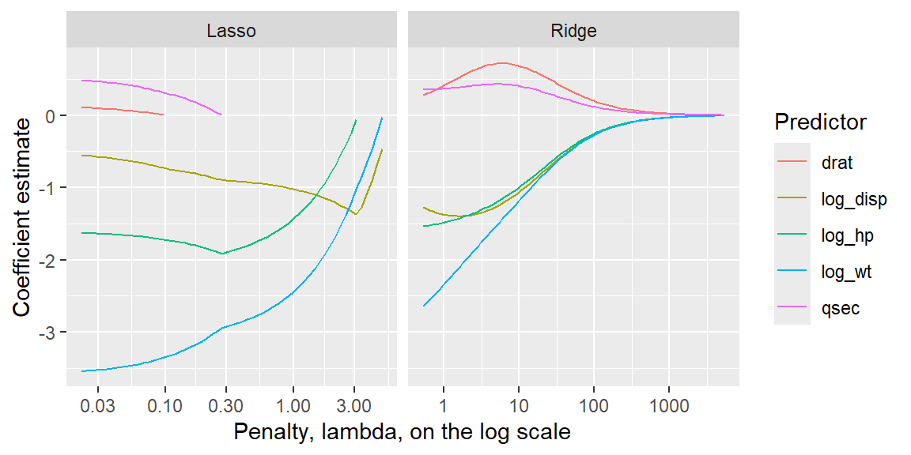

“All generalizations are false, including this one.” - Mark Twain
19.1 Ridge Regression
We have seen that multicollinearity causes the least squares estimates to be imprecise.
If we allow some bias in our estimators, then we can have estimators that are more precise. This is due to the relationship \[
\begin{align*}
E\left[\left(\hat{\beta}-\beta\right)^{2}\right] & =Var\left[\hat{\beta}\right]+\left(E\left[\hat{\beta}\right]-\beta\right)^{2}
\end{align*}
\]
NoteBias-variance tradeoff
Least squares estimators are unbiased under the usual model assumptions, but they can have large variance when predictors are highly correlated. Ridge regression accepts a little bias in exchange for more stable coefficient estimates.
The goal is not to make the coefficients unbiased. The goal is to reduce overall prediction error by shrinking unstable estimates toward 0.
Ridge regression starts by transforming the variables as \[
\begin{align}
Y_{i}^{*} & =\frac{1}{\sqrt{n-1}}\left(\frac{Y_{i}-\overline{Y}}{s_{Y}}\right)\nonumber\\
X_{ik}^{*} & =\frac{1}{\sqrt{n-1}}\left(\frac{X_{ik}-\overline{X}_{k}}{s_{k}}\right)\label{eq:w5_23}
\end{align}
\] This is known as the correlationtransformation.
The estimates are then found by penalizing the least squares criterion \[
\begin{align}
Q & =\sum\left[Y_{i}^{*}-\left(b_{1}^{*}X_{i1}^{*}+\cdots+b_{p-1}^{*}X_{i,p-1}^{*}\right)\right]^{2}+\lambda\left[\sum_{j=1}^{p-1}\left(b_{j}^{*}\right)^{2}\right]
\end{align}
\tag{19.1}\]
The added term gives a penalty for large coefficients. Thus, the estimators are biased toward 0. Because of this, the ridge estimators are called shrinkage estimators.
There are a number of methods for determining \(\lambda\), which are beyond the scope of our class. In R, we will use the glmnet engine to fit the model.
The ridge estimators are more stable than the OLS estimators. However, the distributional properties of these estimators are not easily found.
ImportantStandardize predictors before penalizing coefficients
Ridge and lasso penalties are applied to coefficient sizes. If predictors are on very different scales, the penalty will not treat them fairly. A predictor measured in thousands may have a much smaller coefficient than a predictor measured in fractions, even if both are important.
This is why the examples below use step_normalize(all_numeric_predictors()) before fitting ridge or lasso models.
Example 19.1
ExampleRidge regression for mtcars
Let’s examine the mtcars data last seen in Example 16.3. Recall that disp, hp, and wt need to be log-transformed to make the relationships linear.
We will now use the “glmnet” engine for ridge regression. We set the value of \(\lambda\) in Equation 19.1 with the penalty argument in linear_reg. We will just arbitrarily use 0.1 for now. We will later in this section discuss how to choose a value of penalty.
library(tidyverse)library(tidymodels)ridge_recipe<-recipe(mpg~disp+hp+drat+wt+qsec, data =mtcars)|>step_mutate( log_disp =log(disp), log_hp =log(hp), log_wt =log(wt))|>step_rm(disp, hp, wt)|>step_normalize(all_numeric_predictors())# penalty is the lambda hyperparameter# mixture = 0 indicates ridge regressionridge_model<-linear_reg(mixture =0, penalty =0.1)|>set_engine("glmnet")ridge_workflow<-workflow()|>add_recipe(ridge_recipe)|>add_model(ridge_model)ridge_fit<-ridge_workflow|>fit(data =mtcars)ridge_fit|>tidy()|>knitr::kable(digits =4)
term
estimate
penalty
(Intercept)
20.0906
0.1
drat
0.2831
0.1
qsec
0.3623
0.1
log_disp
-1.2736
0.1
log_hp
-1.5389
0.1
log_wt
-2.6418
0.1
We see that log_wt has the biggest impact on mpg since it has the largest coefficient in magnitude. The negative sign just indicates that the linear relationship between log_wt and mpg is negative.
We also see that drat has the smallest impact on mpg given the other variables are in the model, followed by qsec for the second smallest impact. Let’s reexamine the scatterplot matrix to see if this makes sense.
Looking at the plots of mpg versus the other variables, we see that a linear relationship is apparent for all of the predictors. Between drat and qsec, drat appears stronger (\(r=0.681\)) than qsec (\(r=0.419\)). But why did ridge regression show us that qsec has a larger impact on mpg than drat? Ridge regression shows the impact given the other variables are included in the model. Looking at the scatterplot matrix, drat is more correlated with the other predictor variables than qsec. Thus, when every other predictor is included, drat does not explain much more variability in mpg. Thus, it is not as important.
NoteRidge and lasso in tidymodels
In tidymodels, the linear_reg() arguments penalty and mixture control the type and strength of shrinkage.
Argument
Meaning
penalty
The value of \(\lambda\). Larger values create stronger shrinkage.
mixture = 0
Ridge regression. Coefficients shrink toward 0 but usually do not become exactly 0.
mixture = 1
Lasso regression. Some coefficients can shrink exactly to 0.
0 < mixture < 1
Elastic net, a blend of ridge and lasso.
In this chapter, we focus on ridge and lasso.
19.1.1 The effect of the penalty
In Example 19.1, we chose the penalty (\(\lambda\)) arbitrarily to be 0.1. Are there other values of penalty that would fit the data better?
We can try different penalties using the tidy function:
We see that for some penalties, the importance of some coefficients change.
Let’s use cross-validation to help determine the penalty.
19.1.2 Cross-Validation
Cross-validation is a powerful resampling method used to evaluate the performance of models while minimizing bias and variance. Within the tidymodels framework, this technique ensures that models generalize well to unseen data by fitting and validating on different subsets of the dataset.
Types of Cross-Validation
K-Fold Cross-Validation:
The data is divided into k equal-sized folds (or partitions).
The model is fit on \(k - 1\) folds and validated on the remaining fold.
This process is repeated k times, with each fold serving as the validation set once.
Final performance is computed by averaging metrics across all folds.
Repeated K-Fold Cross-Validation:
This variant involves running k-fold cross-validation multiple times with different splits, which provides more reliable estimates by averaging over several repetitions.
Leave-One-Out Cross-Validation (LOOCV):
Each observation in the dataset serves as the validation set exactly once. This method can be computationally expensive but works well for small datasets.
Implementing Cross-Validation in tidymodels
To implement cross-validation, the rsample package (part of tidymodels) provides essential tools for splitting the data. Below is an example of performing 5-fold cross-validation:
set.seed(1004)# to reproduce resultscv_folds<-vfold_cv(mtcars, v =5)
Using Cross-Validation with Workflows
Within tidymodels, you can streamline model fitting with workflows and use fit_resamples() to fit models on the resamples created by cross-validation:
We can now have tidymodels try different values of penalty and determine which one is best by checking performance on the folded data. Using the folded data helps us determine which value of penalty provides a good fit while also predicting data that was not used to determine the penalty.
We need to set up some values of penalty to try. These values can be constructed using grid_regular. After constructing the grid of possible values of penalty to try, we can then have tidymodels do all of the fitting using tune_grid.
We will put all of these pieces together in the following example.
Example 19.2
ExampleTuning the ridge penalty for mtcars
set.seed(1004)# to reproduce results# Prepare the recipetuned_ridge_recipe<-recipe(mpg~disp+hp+drat+wt+qsec, data =mtcars)|>step_mutate( log_disp =log(disp), log_hp =log(hp), log_wt =log(wt))|>step_rm(disp, hp, wt)|>step_normalize(all_numeric_predictors())# Set up the folded data, let's try 5 foldsridge_folds<-vfold_cv(mtcars, v =5)# Set up the model and set penalty to tunetuned_ridge_model<-linear_reg(mixture =0, penalty =tune())|>set_engine("glmnet")tuned_ridge_workflow<-workflow()|>add_recipe(tuned_ridge_recipe)|>add_model(tuned_ridge_model)# Set up possible values of penalty.# This will try 100 different values of penalty.ridge_penalty_grid<-grid_regular(penalty(range =c(-6, 4)), levels =100)# Now tune the grid with everything we just set up.tuned_ridge<-tune_grid(tuned_ridge_workflow, resamples =ridge_folds, grid =ridge_penalty_grid, metrics =metric_set(rmse, rsq))
At this point, different values of penalty have been tried as determined by grid_regular(). We can view the results in a few ways. We can plot the mean metric for each value of the penalty, or we can ask R to show the top few penalties based on either “rmse” or “rsq”.
# Plot the metrics for different values of the penaltytuned_ridge|>autoplot()

# Find the best penalty in terms of rmsetuned_ridge|>show_best(metric ="rmse")|>knitr::kable(digits =4)
penalty
.metric
.estimator
mean
n
std_err
.config
0
rmse
standard
2.3031
5
0.2825
pre0_mod001_post0
0
rmse
standard
2.3031
5
0.2825
pre0_mod002_post0
0
rmse
standard
2.3031
5
0.2825
pre0_mod003_post0
0
rmse
standard
2.3031
5
0.2825
pre0_mod004_post0
0
rmse
standard
2.3031
5
0.2825
pre0_mod005_post0
# Find the best penalty in terms of rsqtuned_ridge|>show_best(metric ="rsq")|>knitr::kable(digits =4)
penalty
.metric
.estimator
mean
n
std_err
.config
0.5722
rsq
standard
0.9242
5
0.0139
pre0_mod058_post0
0.0000
rsq
standard
0.9242
5
0.0137
pre0_mod001_post0
0.0000
rsq
standard
0.9242
5
0.0137
pre0_mod002_post0
0.0000
rsq
standard
0.9242
5
0.0137
pre0_mod003_post0
0.0000
rsq
standard
0.9242
5
0.0137
pre0_mod004_post0
Note the “best” penalty value differs from “rmse” to “rsq”. Looking at the plot above, we can see there is not much difference in either metric for the “best” penalty value for either case.
Let’s now get the best penalty from one of the metrics. We will use “rsq” here.
With this best penalty, we can finalize the workflow to use this penalty for the ridge regression.
final_ridge_workflow<-finalize_workflow(tuned_ridge_workflow,best_ridge_penalty)final_ridge_fit<-fit(final_ridge_workflow, data =mtcars)final_ridge_fit|>tidy()|>knitr::kable(digits =4)
term
estimate
penalty
(Intercept)
20.0906
0.5722
drat
0.2942
0.5722
qsec
0.3617
0.5722
log_disp
-1.2862
0.5722
log_hp
-1.5345
0.5722
log_wt
-2.6132
0.5722
NoteThe best penalty is not a magic number
The selected penalty depends on the folds used in cross-validation, the metric used to choose the penalty, and the grid of values we tried. Another random split, another metric, or a finer grid could produce a different value.
For that reason, the goal is usually not to defend one exact value of \(\lambda\). The goal is to find a region of penalty values that gives good predictive performance while keeping the model stable.
TipOne-standard-error rule
Sometimes the penalty with the best cross-validated performance is not much better than a simpler model. The one-standard-error rule chooses the simplest model whose performance is within one standard error of the best-performing model.
For ridge and lasso, “simpler” usually means a larger penalty, because a larger penalty creates more shrinkage. The code below asks for the largest ridge penalty whose cross-validated \(R^2\) is close enough to the best observed \(R^2\).
The one-standard-error rule is useful when several penalty values perform almost equally well. It favors a model that is more regularized and often more stable.
19.2 Lasso
19.2.1 Shrinkage as a Variable Selector
In ridge regression, the estimates shrink toward zero for predictors that do not have a strong linear relationship with \(Y\) given the other variables.
The coefficient estimates shrink to zero, but do not equal zero.
The lasso (leastabsoluteshrinkage and selectionoperator) is a shrinkage method like ridge, with subtle but important differences.
The lasso fitting criterion is defined by \[
\begin{align}
Q_{lasso} & =\sum_{i=1}^{n}\left(Y_{i}-\left(\beta_{0}+\beta_{1}X_{1i}+\cdots+\beta_{p-1}X_{p-1,i}\right)\right)^{2}+\lambda\sum_{j=1}^{p-1}\left|\beta_{j}\right|
\end{align}
\tag{19.2}\]
Similarly to ridge regression, the value of \(\lambda\) determines how biased the estimates will be.
As \(\lambda\) increases, the beta coefficients shrink toward zero, with the weakest predictor associations shrinking all the way to 0 before the more strongly associated predictors.
As a result, some beta coefficients that are not strongly associated with the outcome are decreased to zero, which is equivalent to removing those variables from the fitted model.
In this way, the lasso can be used as a variableselection method.
NoteRidge vs. lasso
Ridge and lasso both shrink coefficients, but they behave differently.
Method
Penalty
What happens to coefficients?
Main use
Ridge
Sum of squared coefficients
Coefficients shrink toward 0 but usually remain nonzero.
Stabilize estimates when predictors are correlated.
Lasso
Sum of absolute values of coefficients
Some coefficients can become exactly 0.
Shrinkage plus variable selection.
If the goal is prediction with many correlated predictors, ridge can be attractive. If the goal is a smaller model, lasso can be attractive. But lasso’s selected variables should still be interpreted cautiously.
Example 19.3
ExampleLasso for mtcars
The procedure to fit the lasso is very similar to ridge regression. The only change is in the mixture argument in linear_reg. We will set this to 1 to do lasso.
set.seed(1004)# to reproduce results# Prepare the recipelasso_recipe<-recipe(mpg~disp+hp+drat+wt+qsec, data =mtcars)|>step_mutate( log_disp =log(disp), log_hp =log(hp), log_wt =log(wt))|>step_rm(disp, hp, wt)|>step_normalize(all_numeric_predictors())# Set up the folded data, let's try 5 foldslasso_folds<-vfold_cv(mtcars, v =5)# Set up the model and set penalty to tunelasso_model<-linear_reg(mixture =1, penalty =tune())|>set_engine("glmnet")lasso_workflow<-workflow()|>add_recipe(lasso_recipe)|>add_model(lasso_model)# Set up possible values of penalty.# This will try 100 different values of penalty.lasso_penalty_grid<-grid_regular(penalty(range =c(-4, 4)), levels =100)# Now tune the grid with everything we just set up.tuned_lasso<-tune_grid(lasso_workflow, resamples =lasso_folds, grid =lasso_penalty_grid, metrics =metric_set(rmse, rsq))tuned_lasso|>autoplot()
final_lasso_workflow<-finalize_workflow(lasso_workflow,best_lasso_penalty)final_lasso_fit<-fit(final_lasso_workflow, data =mtcars)final_lasso_fit|>tidy()|>knitr::kable(digits =4)
term
estimate
penalty
(Intercept)
20.0906
0.3594
drat
0.0000
0.3594
qsec
0.0000
0.3594
log_disp
-0.9099
0.3594
log_hp
-1.8574
0.3594
log_wt
-2.8828
0.3594
We see in this dataset that drat and qsec shrunk to 0. This indicates that, for this fitted lasso model and penalty value, they were not selected. The largest fitted coefficient in magnitude is log_wt, which indicates that it has the largest impact on mpg among the selected predictors.
In the next example, we will fit a lasso model to the bodyfat data.
Example 19.4
ExampleLasso for the bodyfat data
In this example, we return to the bodyfat data, where the predictors are strongly correlated.
bodyfat_dat<-read_table("BodyFat.txt")# Prepare the recipebodyfat_lasso_recipe<-recipe(bfat~tri+thigh+midarm, data =bodyfat_dat)|>step_normalize(all_numeric_predictors())# Set up the folded data, let's try 5 foldsbodyfat_folds<-vfold_cv(bodyfat_dat, v =5)# Set up the model and set penalty to tunebodyfat_lasso_model<-linear_reg(mixture =1, penalty =tune())|>set_engine("glmnet")bodyfat_lasso_workflow<-workflow()|>add_recipe(bodyfat_lasso_recipe)|>add_model(bodyfat_lasso_model)# Set up possible values of penalty.# This will try 100 different values of penalty.bodyfat_penalty_grid<-grid_regular(penalty(range =c(-4, 4)), levels =100)# Now tune the grid with everything we just set up.tuned_bodyfat_lasso<-tune_grid(bodyfat_lasso_workflow, resamples =bodyfat_folds, grid =bodyfat_penalty_grid, metrics =metric_set(rmse, rsq))tuned_bodyfat_lasso|>autoplot()
final_bodyfat_lasso_workflow<-finalize_workflow(bodyfat_lasso_workflow,best_bodyfat_penalty)final_bodyfat_lasso_fit<-fit(final_bodyfat_lasso_workflow, data =bodyfat_dat)final_bodyfat_lasso_fit|>tidy()|>knitr::kable(digits =4)
term
estimate
penalty
(Intercept)
20.1950
0.0152
tri
4.9974
0.0152
thigh
0.0000
0.0152
midarm
-1.5447
0.0152
We see that tri has the largest fitted coefficient in magnitude for predicting bfat. The predictor thigh shrunk down to 0. Recall in previous examples when we used the bodyfat data that tri and thigh are highly correlated.
When two predictor variables are highly correlated, the lasso may select one variable and shrink the other to zero. The practitioner should understand that the variable that was not selected could still be scientifically or practically important.
WarningLasso selection is not the same as causal importance
When predictors are highly correlated, lasso may keep one predictor and set another to 0 even though both contain similar information. Which one is selected can depend on the sample, the folds used in cross-validation, and the exact penalty value.
A coefficient of 0 means “not selected by this fitted lasso model.” It does not necessarily mean the variable is scientifically unimportant.
19.3 Elastic Net
Ridge regression and lasso are two endpoints of a larger family of shrinkage methods. The elastic net combines the ridge penalty and the lasso penalty.
The elastic net fitting criterion can be written as \[
\begin{align}
Q_{elastic} =
\sum_{i=1}^{n}\left(Y_{i}-\hat{Y}_{i}\right)^{2}
+ \lambda\left[\frac{1-\alpha}{2}\sum_{j=1}^{p-1}\beta_j^2 + \alpha\sum_{j=1}^{p-1}|\beta_j|\right],
\end{align}
\] where \(\lambda\) controls the overall amount of shrinkage and \(\alpha\) controls the balance between ridge-like and lasso-like behavior.
Value of \(\alpha\)
Model
\(\alpha = 0\)
Ridge regression
\(0 < \alpha < 1\)
Elastic net
\(\alpha = 1\)
Lasso regression
In tidymodels, the mixture argument plays the role of \(\alpha\). Thus, mixture = 0 fits ridge regression, mixture = 1 fits lasso, and values between 0 and 1 fit elastic net models.
Example 19.5
ExampleFitting an elastic net model
Let’s fit an elastic net model to the mtcars data by setting mixture = 0.5. This gives the model both ridge-like shrinkage and lasso-like variable selection behavior.
This example fixes mixture = 0.5 to show how elastic net is fit. In a full analysis, both penalty and mixture can be tuned.
Elastic net is especially useful when there are many correlated predictors. Ridge tends to keep correlated predictors together, while lasso may choose only one. Elastic net can behave as a compromise: it can shrink correlated groups while still allowing some coefficients to become 0.
19.4 Comparing Shrinkage Methods
Ridge, lasso, and elastic net are all shrinkage methods, but they answer slightly different modeling needs. Coefficient path plots and held-out model comparisons can help us see these differences.
19.4.1 Coefficient paths
A coefficient path shows how each coefficient changes as the penalty changes. These plots are useful because shrinkage is not a single event. Coefficients move gradually as \(\lambda\) changes, and lasso coefficients may eventually become exactly 0.
Example 19.6
ExampleSide-by-side coefficient paths
The following plot compares the ridge and lasso coefficient paths for the mtcars predictors. Each line represents one fitted coefficient as the penalty changes.
coefficient_paths<-bind_rows(final_ridge_fit|>extract_fit_parsnip()|>pluck("fit")|>tidy()|>mutate(method ="Ridge"),final_lasso_fit|>extract_fit_parsnip()|>pluck("fit")|>tidy()|>mutate(method ="Lasso"))|>filter(term!="(Intercept)")coefficient_paths|>ggplot(aes(x =lambda, y =estimate, color =term))+geom_line()+scale_x_log10()+facet_wrap(~method, nrow =1, scales ="free_x")+labs( x ="Penalty, lambda, on the log scale", y ="Coefficient estimate", color ="Predictor")

The ridge panel shows coefficients shrinking toward 0. The lasso panel shows that some coefficients can hit 0 exactly. That exact-zero behavior is what allows lasso to perform variable selection.
19.4.2 Prediction performance
Coefficient paths help us understand how the methods behave, but prediction performance should be checked on data that were not used to fit the model. One approach is to split the data into training and testing sets. The training set is used to tune the models; the testing set is saved for the final comparison.
Example 19.7
ExampleComparing OLS, ridge, and lasso on test data
Here we compare ordinary least squares, ridge regression, and lasso using the same train/test split. Ridge and lasso are tuned on cross-validation folds created from the training data, then all three models are evaluated on the testing data.
Because mtcars is a small dataset, the numerical winner should not be treated as permanent. The main lesson is the workflow: tune using training data, then compare final models on held-out testing data.
19.5 Recap
In this chapter, we introduced ridge regression, lasso, and elastic net as alternatives to ordinary least squares when coefficient stability, prediction, or variable selection are important.
Idea
Meaning
Shrinkage
Pulling coefficient estimates toward 0 by adding a penalty to the fitting criterion.
Bias-variance tradeoff
Ridge and lasso intentionally introduce bias to reduce variance and improve stability or prediction.
Penalty parameter
The value \(\lambda\) controlling the amount of shrinkage; larger values create stronger shrinkage.
Standardization
Predictors should be placed on a comparable scale before applying penalties to coefficient sizes.
Ridge regression
Uses a squared-coefficient penalty. Coefficients shrink toward 0 but usually do not become exactly 0.
Lasso
Uses an absolute-value penalty. Some coefficients can become exactly 0, so lasso can perform variable selection.
mixture = 0
Ridge regression in tidymodels with the glmnet engine.
mixture = 1
Lasso regression in tidymodels with the glmnet engine.
Elastic net
Uses a blend of ridge and lasso penalties; in tidymodels, values of mixture between 0 and 1 fit elastic net models.
Cross-validation
A resampling approach used to estimate how well different penalty values predict new data.
Tuned penalty
A penalty selected using a performance metric such as RMSE or \(R^2\) across cross-validation folds.
One-standard-error rule
Chooses a simpler penalty value whose cross-validated performance is within one standard error of the best-performing value.
Coefficient path
A plot showing how each fitted coefficient changes as the penalty changes.
Held-out test set
Data saved for final model comparison after fitting and tuning are complete.
Correlated predictors and lasso
Lasso may select one variable from a correlated group and set another to 0, even if both contain similar information.
19.6 Check your understanding
NoteProblems
Why might we prefer a biased estimator if ordinary least squares is unbiased?
What does the penalty parameter \(\lambda\) control in ridge and lasso regression?
Why should predictors be standardized before fitting ridge or lasso models?
What is the main difference between ridge and lasso in terms of coefficient behavior?
In tidymodels, what do mixture = 0 and mixture = 1 represent?
Why is cross-validation useful when choosing the penalty value?
Why might the best penalty based on RMSE differ from the best penalty based on \(R^2\)?
Why should a lasso coefficient of 0 not automatically be interpreted as proof that the variable is scientifically unimportant?
When predictors are highly correlated, why might ridge be more stable than lasso?
Why is the selected penalty not a “magic” value?
What does elastic net combine?
What does a coefficient path plot help you see?
Why might the one-standard-error rule choose a different penalty than select_best()?
Why should final model comparisons use data that were not used for fitting or tuning?
TipSolutions
Prediction error depends on both bias and variance. Ordinary least squares can have high variance when predictors are correlated. Ridge and lasso accept some bias to reduce variance and make predictions or estimates more stable.
It controls the strength of shrinkage. When \(\lambda\) is small, the penalty has little effect. When \(\lambda\) is large, coefficients are pulled more strongly toward 0.
The penalty acts on coefficient size. If predictors are measured on different scales, coefficient sizes are not directly comparable. Standardization helps ensure that the penalty treats predictors more fairly.
Ridge shrinks; lasso can select. Ridge coefficients shrink toward 0 but usually remain nonzero. Lasso coefficients can shrink exactly to 0, which removes those predictors from the fitted model.
They choose the penalty type.mixture = 0 fits ridge regression. mixture = 1 fits lasso regression. Values between 0 and 1 fit elastic net models.
It estimates performance on unseen data. Cross-validation fits the model on some folds and evaluates it on held-out folds, helping choose a penalty that predicts well beyond the training data.
The metrics emphasize different things. RMSE measures typical prediction error in response units, while \(R^2\) measures explained variation. The penalty that optimizes one metric may not optimize the other.
Lasso selection is sample-dependent. A coefficient of 0 means the variable was not selected by this fitted lasso model at this penalty value. With correlated predictors or different folds, another variable could be selected instead.
Ridge tends to share information among correlated predictors. Lasso may choose one correlated predictor and discard another. Ridge usually keeps both but shrinks them, which can be more stable when predictors carry overlapping information.
It depends on choices made during tuning. The selected penalty depends on the folds, metric, and grid of penalty values. It is better to think of a useful range of penalties than a single perfect value.
Elastic net combines ridge and lasso. It uses both a squared-coefficient penalty and an absolute-value penalty. In tidymodels, this is controlled by setting mixture between 0 and 1.
It shows how coefficients change as shrinkage increases. Ridge paths usually move smoothly toward 0, while lasso paths can show coefficients becoming exactly 0.
It favors a simpler model when performance is nearly tied.select_best() chooses the numerically best penalty for a metric. The one-standard-error rule chooses a more regularized penalty if its performance is close enough to the best value.
Held-out data give a cleaner estimate of future performance. If the same data are used to tune and judge the models, the comparison can be too optimistic. Testing on data not used during fitting or tuning gives a better sense of generalization.